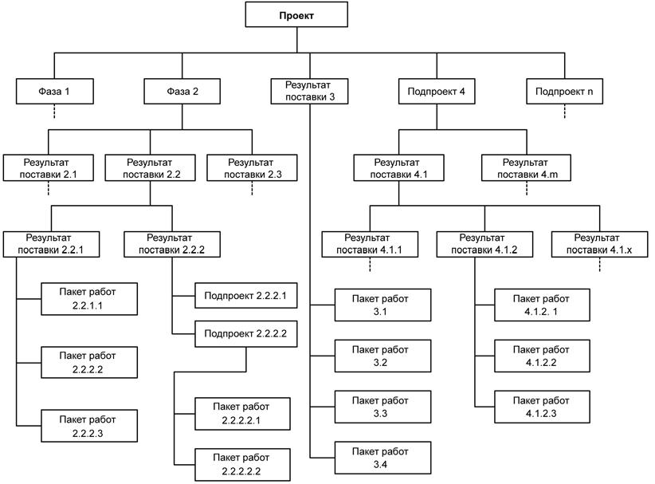
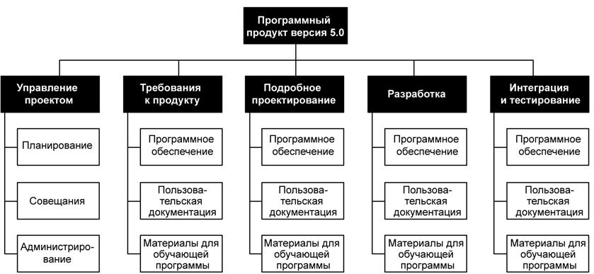
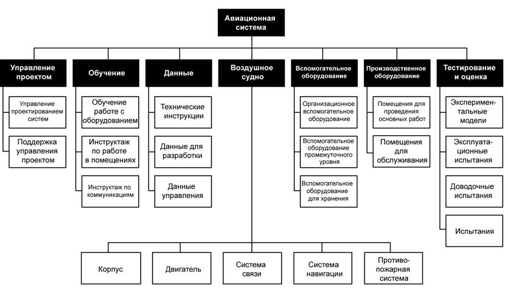

Создание ИСР (п.5.3. рис.7.1.)
ИСР - это согласованная с результатами поставки иерархическая декомпозиция работ, которые команда проекта должно выполнить для достижения целей проекта и создания оговоренных результатов поставки. С ее помощью структурируется и определяется все содержание проекта. ИСР подразделяет работы проекта на более мелкие и более управляемые части, где на каждом более низком уровне ИСР дается более детальное определение проектных работ. Для запланированных работ, соответствующих элементам низшего уровня ИСР (их еще называют пакетами работ), можно определять график выполнения, сметную стоимость, осуществлять наблюдение и контроль за ними.
В ИСР включаются работы, указанные в текущем одобренном описании содержания проекта. Составные элементы ИСР облегчают участникам проектаобзор результатов поставки проекта (п. 4.4.3.1 рис. 6.1).
5.3.1 Создание ИСР: входы
5.3.1.1 Активы организационного процесса. Описаны в пункте 4.1.1.4. рис.6.1.
5.3.1.2 Описание содержания проекта. Приведено в пункте 5.2.3.1.рис.7.1.
5.3.1.3 План управления содержанием проекта. Описан в пункте 5.2.1.4. рис. 7.1
5.3.1.4 Одобренные запросы на изменение. Описаны в пункте 4.4.1.4. рис.6.1.
5.3.2 Создание ИСР: инструменты и методы
5.3.2.1 Шаблоны иерархической структуры работ. Несмотря на уникальность каждого проекта, ИСР предыдущего проекта часто может служить шаблоном для нового проекта, поскольку некоторые проекты в той или иной степени будут схожи с предшествующими. Например, большая часть проектов в данной конкретной организации будет иметь одинаковые или схожие жизненные циклы, а потому и одинаковые или схожие результаты поставки каждой фазы. Во многих областях приложения имеются стандартные шаблоны ИСР; свои стандартные шаблоны есть и во многих исполняющих организациях.
ИСР создается на основе стандарта Института управления проектами (PMI). В это руководство включены взятые из некоторых отраслей примеры шаблонов ИСР, которые можно адаптировать под конкретные проекты в конкретной области приложения.

Рисунок 7.3 - Пример иерархической структуры работ с несколькими ответвлениями,разбитыми до уровня пакетов работ
5.3.2.2. Декомпозиция - это разделение результатов поставки проекта на более мелкие и более управляемые элементы. Декомпозиция выполняется до тех пор, пока работа и результаты поставки не определяются на уровне пакетов работ.
Уровень пакетов работ является низшим и представляет собой точку, в которой стоимость и график работ могут быть оценены с достаточной степенью достоверности. Уровень детализации пакетов работ будет варьироваться в зависимости от размера и сложности проекта.
Декомпозиция может оказаться невозможной для результатов поставки или подпроектов, которые будут выполняться в далеком будущем. Команда управления проектом обычно дожидается точного определения результата поставки или подпроекта, чтобы иметь возможность разработать подробную ИСР. Этот метод иногда называют "планирование методом набегающей волны".
У разных результатов поставки могут быть разные уровни декомпозиции.
Для получения управляемого объема работ (т. e. пакета работ), работы по некоторым результатам поставки нужно разбивать лишь до следующего уровня, в то время как для других требуется больше уровней разбиения.
По мере разбиения работ на более мелкие части с все более детальным описанием улучшается способность планировать, управлять и контролировать работу.
Чрезмерная декомпозиция может привести к непродуктивной управленческой трудоемкости, неэффективному использованию ресурсов и снижению эффективности при выполнении работы. Команда проекта должна найти баланс между слишком малой и слишком большой детализацией планирования ИСР.
Декомпозиция всей совокупности проектных работ обычно включает в себя следующие операции:
- Определение результатов поставки и работ для их достижения.
- Структурирование и организация ИСР.
- Разбиение верхних уровней ИСР на детализированные элементы нижних уровней
- Разработка и присвоение идентификационных кодов элементам ИСР.
- Проверка необходимости и достаточности степени декомпозиции работ.
Определение основных результатов поставки и работ, необходимых для их получения, требует анализа подробного описания содержания проекта. Для этого анализа требуется экспертная оценка, идентифицирующая все работы, включая результаты поставки управления проектом и результаты, требующиеся согласно контракту.
Структурирование результатов поставки и соответствующей проектной работы и их представление в виде иерархической структуры работ, удовлетворяющей требованиям команды проекта к управлению и контролю, является методом анализа, который можно выполнять с использованием шаблона ИСР. В итоге может создаваться несколько разных видов структуры:
- Использование основных результатов поставки и подпроектов в качестве первого уровня декомпозиции, как показано на рис. 7.3.
- Использование подпроектов, как показано на рис. 7.3, где подпроекты могут разрабатываться сторонними организациями. Например, в некоторых областях приложения может быть определена и разработана ИСР проекта, состоящая из нескольких частей (например, сводная ИСР проекта с несколькими подпроектами в рамках ИСР, на которые могут быть заключены контракты со сторонними организациями). В таких случаях продавец разрабатывает вспомогательную иерархическую структуру работ по контракту в рамках работ, включенных в условия контракта.
- Использование фаз жизненного цикла проекта в качестве первого уровня декомпозиции, а результатов поставки проекта - в качестве второго уровня, как показано на рис. 7.4.
- Использование разных подходов в каждом ответвлении ИСР, как показано на рис. 7.5, где тестирование и оценка являются фазой, самолет - продуктом, а обучение - сопутствующей услугой.
Для декомпозиции элементов ИСР верхнего уровня требуется разделение работ по каждому из результатов поставки или подпроектов на основные элементы, где элементы ИСР представляют собой поддающиеся проверке продукты, услуги или результаты. Каждый элемент должен быть четко и полно определен и закреплен за конкретным исполняющим подразделением, отвечающим за выполнение данного элемента ИСР. При определении элементов указывается, как в действительности будет выполняться и контролироваться работа проекта. Например, в такой элемент управления проектом, как отчетность о текущем состоянии, могут входить еженедельные отчеты, в то время как изготавливаемый продукт может включать в себянесколько отдельных физических составляющих плюс окончательную сборку.
При проверке корректности декомпозиции определяется, являются ли элементы ИСР нижнего уровня необходимыми и достаточными для достижения соответствующих результатов поставки на более высоких уровнях.

Рисунок 7.4 - Пример иерархической структуры работ, организованной по фазам
(*-ИСР приведена исключительно в качестве иллюстрации. Она не имеет цель представить полное содержание конкретного проекта и не предполагает что показанный способ организации ИСР является единственно возможным для проектов такого типа)

Рисунок 7.5 - Пример иерархической структуры работ для элементов оборонного комплекса
(*-ИСР приведена исключительно в качестве иллюстрации. Она не имеет цель представить полное содержание конкретного проекта и не предполагает что показанный способ организации ИСР является единственно возможным для проектов такого типа)
5.3.3 Создание ИСР: выходы
5.3.3.1 Описание содержания проекта (обновления). Если одобренные запросы на изменение являются результатом создания ИСР,то в описание содержания проекта включаются эти одобренные изменения.
5.3.3.2 Иерархическая структура работ. Ключевым документом, появляющимся в процессе создания ИСР, является текущая ИСР.
ИСР не следует путать с другими видами иерархических структур, используемых для представления информации проекта. К таким структурам, используемым в некоторых областях приложения или областях знаний, относятся:
- Организационная структура. Представляет собой иерархически организованное изображение организации проекта, устроенное таким образом, чтобы пакеты работ можно было соотнести с исполняющими подразделениями.
- Ведомость материалов. Представляет собой иерархически выстроенное табличное представление сборочных узлов, комплектующих и компонентов, необходимых для создания продукта.
- Иерархическая структура рисков. Иерархически выстроенное представление идентифицированных рисков проекта по категориям.
- Иерархическая структура ресурсов. Иерархически выстроенное представление ресурсов по их типам.
5.3.3.3 Словарь ИСР - документ, появляющийся при создании ИСР и обеспечивающий работу с ИСР. Он является сопроводительным документом ИСР. В нем может быть описано подробное содержание элементов ИСР, в том числе пакеты работ и контрольные счета. В словаре ИСР для каждого элемента ИСР имеется идентификатор кода счета, содержание работы, ответственная организация и перечень контрольных событий расписания. Для повышения эффективности работы элемент ИСР может дополнительно включать информацию о контракте, требования к качеству и техническую информацию.
5.3.3.4 Базовый план по содержанию. Одобренное подробное описание содержания проекта (пункт 5.2.3.1 рис.7.1) вместе с ИСР и словарем ИСР представляют собой базовый план по содержаниюпроекта.
5.3.3.5 План управления содержанием проекта (обновления). Если одобренные запросы на изменения являются результатом создания ИСР, то может потребоваться включить эти одобренные изменения в план управления содержанием проекта.
5.3.3.6 Запрошенные изменения описания содержания проекта и его элементов могут появляться в процессе создания ИСР и рассматриваются в рамкахпроцесса общего управления изменениями.